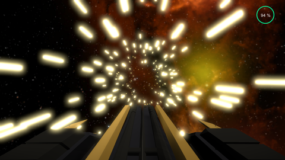
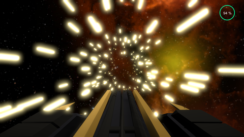
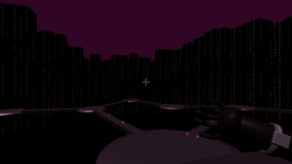
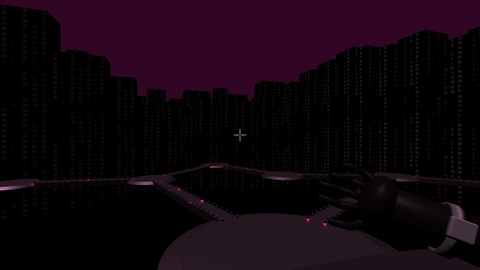

Bonjour et bienvenue sur mon EportFolio, Je suis étudiant ingénieur au Cnam Enjmin de Toulon. Je suis passionné de jeux vidéo depuis toujours. Vous trouverez donc sur mon site toutes les informations sur mon parcours ainsi que sur les projets que j'ai pu réaliser. Si vous voulez mon contacter, voici les liens
Informatique
Science
Musique
Je réalise des jeux en VR aussi :D


 



 
